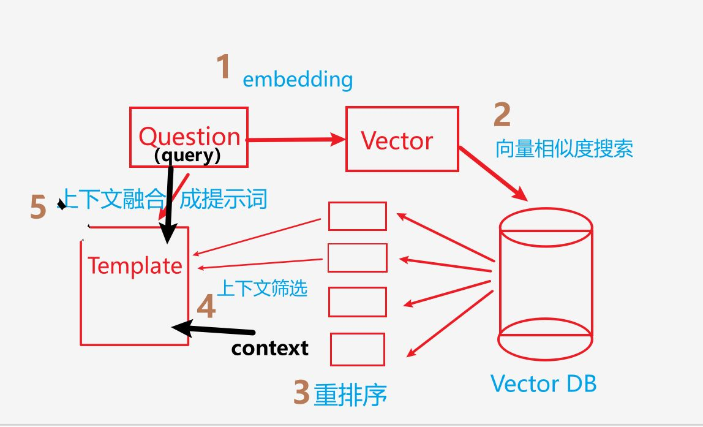

Tags: 导入Edge::2-15 导入Edge::2-19
RAG里面，增强模块的目的是什么？【通过调整什么来提升什么？】
通过调整或改进生成模型的输入来提升生成效果。
Tags: 导入Edge::2-15 导入Edge::2-19
RAG系统的工作流程里面，知识检索模块流程和步骤是什么？ 【对PDF文本怎么处理？然后使用什么来对文本进行嵌入，导入到哪里，混合检索方式是什么？】
首先，我们通过处理大量的PDF文本构建本地知识库。在这个过程中，我们需要对PDF进行结构化处理，将文本切分成合适的块（chunk），确保每个块包含足够的上下文信息。
接着，我们使用embedding模型对这些文本块进行嵌入，并将其导入到一个高效的向量数据库，如Milvus。
在检索阶段，我们采用BM25和embedding检索的混合方式，利用BM25进行初步的关键词匹配，然后使用embedding模型计算语义相似度，最终返回最相关的上下文信息。
Tags: 导入Edge::2-15 导入Edge::2-19
RAGAs 它通过什么化的指标，来对哪两个模块进行独立的评估？
它通过一套结构化的指标，对RAG系统的检索和生成模块进行独立和整体评估，帮助开发者优化系统性能并确保其可靠性。
Tags: 导入Edge::2-15 导入Edge::2-19
在RAG系统中，检索模块和生成模块分别的作用是什么？负责什么？
【检索模块是从哪里提取什么，生成模块是利用什么生成什么？】
检索模块负责从外部知识库中提取相关信息，
而生成模块利用这些信息生成最终的回答。
Tags: 导入Edge::2-15 导入Edge::2-19
RAGAs框架 提供端到端的评估。 是什么意思？ 【评估整个什么？包括从哪里到哪里的流程？】
综合评估整个RAG管道，包括从检索到生成的完整流程。
Tags: 导入Edge::2-15 导入Edge::2-19
RAGAs需要以下四类数据作为输入 分别是什么？
Question（用户查询）：用户提出的问题，作为RAG管道的输入。
Contexts（检索上下文）：从知识库中检索到的相关文本片段，用于支持回答生成。
Answer（生成答案）：基于上下文和查询生成的回答。
Ground Truth（参考答案）：问题的真实答案，仅在某些指标（如上下文召回率）计算时需要。
Tags: 导入Edge::2-15 导入Edge::2-19
RAGAs需要以下四类数据作为输入 ，其中question指的是什么？
Question（用户查询）：用户提出的问题，作为RAG管道的输入。
Tags: 导入Edge::2-15 导入Edge::2-19
RAGAs 里面，检索模块指标，其中，上下文召回率（Context Recall） 是什么意思？
【衡量什么信息中包含多少与什么相关的信息？】
Tags: 导入Edge::2-15 导入Edge::2-19
RAGAs 里面，生成模块指标,包括哪两个？ 中文英文以及相关的含义是什么？
Tags: 导入Edge::2-15 导入Edge::2-19
RAGAs 里面，生成模块指标,其中，忠实性（Faithfulness）表示什么意思？ 【评估什么跟什么是否一致，避免什么现象？】
评估生成答案是否与检索到的信息一致，避免“幻觉”现象。
Tags: 导入Edge::2-15 导入Edge::2-19
RAGAs 里面，生成模块指标,其中，答案相关性（Answer Relevancy）表示什么意思？ 【来衡量什么是否回应什么？】
衡量生成答案是否直接回应了用户查询。
Tags: 导入Edge::2-15 导入Edge::2-19
RAGAs 里面，端到端的指标里面，答案正确性（Answer Correctness）是什么意思？ 【衡量什么跟什么是否一致？】
输出答案和标准答案。衡量生成答案是否与参考答案一致。
Tags: 导入Edge::2-15 导入Edge::2-19
RAGAs 里面，忠实性通过什么或者什么来评估什么是否基于什么。
忠实性通过语义相似度或人工标注来评估生成答案answer是否基于检索内容context。
Tags: 导入Edge::2-15 导入Edge::2-19
检索增强生成（Retrieval-Augmented Generation, RAG）是一种 结合什么和什么的框架？
结合信息检索和生成技术的框架。
Tags: 导入Edge::2-15 导入Edge::2-19
语义切割是什么意思？ 【基于什么来进行分割？】
基于句子、段落或主题等语义单元进行分割。
Tags: 导入Edge::2-15 导入Edge::2-19
递归切割是什么意思以及它适合什么样的 文本。
通过递归方式逐步缩小块大小，直到满足预定条件。这种方法适用于处理复杂结构化文档，例如Markdown或LaTeX格式。
Tags: 导入Edge::2-15 导入Edge::2-19
嵌入模型可根据任务需求选择。BERT 以及 E5或bge-large，这两者分别适合什么？
【前者适合什么语义表示？后者适合什么任务？】
BERT适合短文本语义表示，而E5或bge-large等优化模型适合搜索任务。
Tags: 导入Edge::2-15 导入Edge::2-19
对于向量数据库来说，用户的查询会变成什么，并与谁进行什么样的比较？用到了什么数学算法？
用户查询也被嵌入为向量，并与数据库中的向量进行相似度匹配（如余弦相似度）。
Tags: 导入Edge::2-15 导入Edge::2-19
BM25 为什么可以用于传统的搜索引擎，
混合检索为什么可以用于问答系统？
BM25 使用的是关键词精确匹配，
混合检索 使用了语义理解。
Tags: 导入Edge::2-15 导入Edge::2-19
BM25 这个算法通过什么方式来进行排名？
是通过匹配的关键词，他们的频率和权重来进行排名。
Tags: 导入Edge::2-15 导入Edge::2-19
用一张图来描述RAGAs里面的6个评价指标。
Tags: 导入Edge::2-15 导入Edge::2-19
RAGAs里面评估 检索模块用到哪两个指标，以及每个指标跟哪两个部分相关？
- 上下文召回率，Context 和 Ground Truth ,
- 上下文精确度，Context 和 Question。
Tags: 导入Edge::2-15 导入Edge::2-19
RAGAs里面评估 生成模块用到哪两个指标，以及每个指标跟哪两个部分相关？
答案相关性，Answer 和 Question，
忠实度，Answer 和 Context。
Tags: 导入Edge::2-19
RAGAs 里面，忠实性 通过哪两种方式来进行评估？
语义相似度或者人工标注。
Tags: 导入Edge::2-19
大模型的混合检索指的是是将什么和什么结合起来使用。
将传统的文本检索（如基于关键词的检索）和基于语义向量的检索（如通过向量数据库检索相似文本）。
Tags: 导入Edge::2-19
文本检索是基于什么词？
关键词。
Tags: 导入Edge::2-19
混合检索 同时利用基于什么的匹配和基于什么的匹配，从而增强检索结果的全面性和准确性。
基于词汇的匹配和基于语义的匹配。
Tags: 导入Edge::2-19
RAG（Retrieval-Augmented Generation）系统中，混合检索会先使用什么来检索来做什么，再使用什么检索来做什么事情。
首先使用文本检索（例如关键词匹配）获取相关文档，
然后再使用语义向量检索对这些文档进行排序，确保最终得到的候选文档在语义上最相关。
Tags: 导入Edge::2-19
Graph-RAG"可以用来描述什么样的系统架构？ 【什么和什么结合的架构？】
结合知识图谱和RAG（Retrieval-Augmented Generation）系统的架构。
Tags: 导入Edge::2-19
Graph-RAG" 这样的系统结构。 分别使用什么数据库以及存储什么样的知识。
图数据库（例如Neo4j）作为结构化知识存储来源，
而非结构化知识（如文本数据）则存储在向量数据库中。
Tags: 导入Edge::2-19
Graph-RAG 这个系统的三部分流程是什么？ 【是哪两个数据库分别存储什么信息？然后两路召回的结果怎么样？然后最终输入给谁？】
- 通过Neo4j存储结构化知识，
通过milvus向量数据库存储非结构化知识，
- 双路召回结果融合后再与Prompt拼接，
- 最终交由大模型生成答案
Tags: 导入Edge::2-19
RAG 是将什么和什么结合起来的技术框架，通过检索什么来增强模型的什么能力？
RAG是一种将检索系统与生成模型相结合的技术框架，通过检索外部知识来增强语言模型的生成能力，提高回答的准确性和可靠性。
Tags: 导入Edge::2-19
RAG 三大的核心模块和机制是什么？ 【两个模块，一个机制分别是什么？】
检索模块，融合机制，生成模块。
- 检索模块：从知识库中检索相关文档，
- 生成模块：基于检索内容和查询生成回答，
- 融合机制：将检索到的信息与模型知识结合。
Tags: 导入Edge::2-19
RAG 三大的核心模块和机制，其中，检索模块是什么作用？【从哪里检索出什么？】
从知识库中检索相关文档。
Tags: 导入Edge::2-19
RAG 三大的核心模块和机制，其中，生成模块是什么作用？ 【基于什么和什么来生成什么？】
基于检索内容context和查询query生成回答
Tags: 导入Edge::2-19
RAG 系统构建时候的，知识库构建，这个阶段包括哪些内容？
1 对文档清洗以后进行分块得到chunks。
2 从chunks得到metadata元数据。
3 chunks经过嵌入模型以后得到嵌入向量embedding。
4 Chunks metadata embedding 3者共同建立索引系统
Tags: 导入Edge::2-19
RAG 系统构建时候的，检索过程，这个阶段包括哪些内容？ 【查询什么化，计算什么，然后获取什么作为上下文？】
Tags: 导入Edge::2-19
RAG 系统构建时候的，生成过程，这个阶段包括哪些内容？
【将什么和什么拼接到哪里形成什么输入到模型里面？】
用户query 和检索到的 context拼接到模板template里面形成Prompt输入到模型里面。
Tags: 导入Edge::2-19
RAG 系统 他的技术优势是什么？
【为什么可以减少幻觉问题以及为什么实时性较强？】
减少幻觉是因为他基于最新的知识，
实时性较强，是因为它的数据库可以更新。
从两方面说，一方面是
准确性，另一方面是
灵活性。
- 准确性则是基于最新知识，并且可以减少幻觉问题，
- 灵活性则是知识库可以进行更新，而且实时性比较强。
Tags: 导入Edge::2-19
构建RAG系统时 需要进行模型选型，哪三个模型的选型？
嵌入模型、排序模型和生成模型。
Tags: 导入Edge::2-19
FP16是什么的缩写以及 它指的是什么意思？
“16-bit Floating Point”的缩写，指的是使用16位来表示浮点数。
Tags: 导入Edge::2-19
在混合精度训练中，使用FP32的缩放因子与FP16数据进行计算操作时，最终的结果通常是什么数据格式？
通常还是16位浮点数（FP16）。
Tags: 导入Edge::2-19
在混合精度训练中，缩放机制。
其中混合精度训练，混合的是哪两种精度，以及缩放机制针对的是哪个数据类型？
混合的是 FP16 和 FP32，
缩放机制针对的是 FP16 。
Tags: 导入Edge::2-19
RAG 里面的融合机制是将什么跟什么进行融合？
检索到的外部知识（context）与用户的查询（query）。
Tags: 导入Edge::2-19
在RAG流程中，在检索模块里面包含这些内容，
1 查询向量化，
2 相似度计算
3 以及获取相关文档，
分别展开是什么意思？
当用户提出问题时，系统会先将这个问题转换成向量形式，
然后用的是向量相似度搜索，
在向量数据库中检索相关的文档片段，通常会返回多个最相关的文档片段。

Tags: 导入Edge::2-19
在RAG流程中，从用户的输入查询到最终的提示词生成。经历了五个阶段分别是什么？
→ 查询向量化
→ 向量相似度检索
→ 文档重排序
→ 上下文筛选和截断
→ 提示词构建和融合
Tags: 导入Edge::2-19
Function Call 可以让模型在什么过程中，自动检测用户的什么？然后生成一个什么格式的什么请求？
Function Call 能让大模型在对话过程中自动检测用户需求，并以结构化的形式生成一个函数调用请求（通常为 JSON 格式），
Tags: 导入Edge::2-19
在 Function Call 机制下，大模型会根据什么来生成一个结构化的什么格式？ 包含了哪些内容？
大模型会根据预设的函数描述，自动生成一个包含“函数名称”和“参数”的结构化 JSON 对象，而不是直接返回纯文本回复。
Tags: 导入Edge::2-19
在 Function Call 机制下，大模型是否会返回纯文本回复。
不会。
Tags: 导入Edge::2-19
在 Function Call 机制下，大模型会返回函数名称和对应参数，随后到底是谁执行？是模型自己执行还是说开发者执行？ 函数执行后的返回信息，存储到哪里？然后发送给谁，然后生成什么。
真正的调用动作由开发者的代码来完成，就是直接将参数传入到这个函数名称里面来调用。
返回内容存储在messages的历史对话里面，发送给大模型以后生成最终答案。
Tags: 导入Edge::2-19
在 Function Call 机制下，大模型会根据用户的数据来判断调用什么函数【返回的是什么格式以及包含哪些内容】
返回的是JSON格式，通常包含函数名称和调用所需的参数。
Tags: 导入Edge::2-19
RAG系统里面，
混合检索是不是先使用文本检索，也就是关键词匹配获取相关文档，然后再使用语义检索对这些检索到的文档进行排序？
不是的，文本检索跟语义检索是并行的。
Tags: 导入Edge::2-19
RAG系统里面，
混合检索流程包含两个阶段分别是什么？
并行检索：
结果融合：
- 将两种检索方式的结果进行合并
- 使用各种策略（如投票、加权等）确定最终排序
Tags: 导入Edge::2-19
RAG系统里面，
混合检索流程包含包含哪两种检索方式，以及他们的关系是串行还是并行，以及他们分别针对对是什么？
Tags: 导入Edge::2-19
RAG系统里面，
重排阶段包含哪几个层次？ 它们的计算成本和速度的区别是什么？以及分别使用什么特征什么模型？
包括
粗排和
精排。
- 粗排的话，计算成本低，速度快。精排的话，成本高，更加准确。
- 粗排的特点是使用简单的特征，比如TF IDF分数和BM25分数。 精排的话是使用更加复杂的深度学习模型。
Tags: 导入Edge::2-19
RAG系统里面，
重排阶段包含粗排 和 精排，他们分别的目的是什么？ 【筛选出什么文档以及进行什么评估?】
- 快速筛选出潜在相关文档，
- 对候选集进行更精确的相关性评估。
Tags: 导入Edge::2-19
RAG系统里面，
典型的检索系统在从查询向量进入数据库，到拿到最终的结果之前经历了哪2个阶段？
召回 -> 重排序 -> 最终结果
Tags: 导入Edge::2-19
RAG系统里面，
典型的检索系统的流程如下：
召回 -> 粗排 -> 精排 -> 最终结果
这个召回阶段，它的本质是什么？然后它使用了 哪两种方式以及它的特点是追求什么率，以及容忍什么？
它的本质是混合检索，用到了文本检索和语义检索 这两种方式，然后它的特点是追求高的召回率。 容忍一定的噪声。
Tags: 导入Edge::2-19
RAG系统里面，
典型的检索系统的流程如下：
召回 -> 粗排 -> 精排 -> 最终结果
这个粗排阶段， 它的计算成本以及速度方面是怎么样的，以及使用到了什么特征，以及使用到了什么模型的，以及它的目的是什么。
它的计算成本低速度快，
使用到了简单特征（如TF-IDF分数、BM25分数等），
使用了轻量级机器学习模型，
目的是快速筛选出潜在相关文档。
Tags: 导入Edge::2-19
RAG系统里面，
典型的检索系统的流程如下：
召回 -> 粗排 -> 精排 -> 最终结果
这个精排阶段，来计算成本以及准确率是怎么样的，以及使用到了什么模型，以及它的目的是精确的评估什么。
它的计算成本和 精确率 都高，然后使用的是深度学习模型，它的目的是精确评估相关性。
Tags: 导入Edge::2-19
RAG系统里面，
混合检索里面它使用到了文本检索和语义检索，最终把这两种方式检测到的结果合并，这个过程本质上属于哪个阶段？
召回阶段。
Tags: 导入Edge::2-19
RAG系统里面，
重排序阶段，跟精排阶段，和粗排阶段这三个概念之间的关系是什么？
重排序 这个阶段包括 精排 和粗排 这两个阶段。
重排序（Reranking）
├── 粗排（Coarse Ranking）
└── 精排（Fine Ranking）
Tags: 导入Edge::2-19
RAG系统里面，
重排序，精排，粗排，这三个概念分别的英文单词是什么？
重排序（Reranking）
├── 粗排（Coarse Ranking）
└── 精排（Fine Ranking）
Tags: 导入Edge::2-19
RAG系统里面，
从用户查询到生成最终回答，中间包括哪三个阶段？
用户查询
↓
召回阶段（文本检索 + 语义检索）
↓
重排序阶段
├── 粗排（Coarse Ranking）
└── 精排（Fine Ranking）
↓
上下文组装阶段
↓
生成回答
Tags: 导入Edge::2-19
RAG系统里面，从用户查询到生成回答的流程如下。其中，召回阶段和重排序阶段分别包含哪两个部分？
用户查询 -->召回阶段 --> 重排序阶段 -->上下文组装阶段 -->生成回答
召回阶段（文本检索 + 语义检索）
↓
重排序阶段
├── 粗排（Coarse Ranking）
└── 精排（Fine Ranking）
Tags: 导入Edge::2-19
RAG系统里面，
粗排和精排两个子阶段它的总称是什么以及它的目的是对谁的结果进行优化排序？
他的总称是重排序ranking，
目的是优化召回/检索的结果的排序。
Tags: 导入Edge::2-19
RAG系统里面，
将查询到的上下文进行组装。进入到这个阶段之前经历过哪两个阶段？
查询处理 -> 召回阶段 -> 重排序阶段 -> 上下文组装 -> 生成回答
Tags: 导入Edge::2-19
all-MiniLM-L6-v2
这个模型实际上是哪个框架的一个具体模型实现。
Sentence-BERT (SBERT) 框架。
Tags: 导入Edge::2-19
Sentence-BERT (SBERT) 框架 ，其中，在应用里面使用了这个框架的哪一个具体模型？
all-MiniLM-L6-v2
Tags: 导入Edge::2-19
导入all-MiniLM-L6-v2这个模型的具体的代码是什么？ 【from sentence_transformers 还是from SentenceTransformer】
# 导入SBERT框架
from sentence_transformers import SentenceTransformer
# 加载具体的SBERT模型
model = SentenceTransformer('all-MiniLM-L6-v2')
Tags: 导入Edge::2-19
all-MiniLM-L6-v2这个模型名称 各个部分的含义是什么？ 如何拆解理解呢？
all: 表示这个模型经过多任务训练MiniLM: 底层使用的基础模型架构L6: 6层网络结构v2: 第二个版本
Tags: 导入Edge::2-19
all-MiniLM-L6-v2这个模型是具体通过导入哪个库来使用。
sentence-transformers库。
Tags: 导入Edge::2-19
Sentence-BERT 这个模型作为嵌入模型它的优势是什么？ 【专门针对谁进行优化？】
Tags: 导入Edge::2-19
Sentence-BERT 这个模型作为嵌入模型，它的适用场景是什么？ 【什么计算，什么搜索，什么匹配？】
- 文本相似度计算
- 语义搜索
- 文档匹配
Tags: 导入Edge::2-19
Sentence-BERT 这个模型作为嵌入模型，还是用于重排模型？
嵌入模型.
Tags: 导入Edge::2-19
在项目中使用哪个框架进行文本嵌入？具体使用了哪个模型？
"在项目中，我使用了Sentence-BERT框架进行文本嵌入，具体实现选择了all-MiniLM-L6-v2这个模型。
Tags: 导入Edge::2-19
Sentence-BERT 和 all-MiniLM-L6-v2 这两个名称它们之间的关系是什么？
Sentence-BERT是一个用于文本嵌入的框架，而all-MiniLM-L6-v2是该框架下的一个具体实现模型，它是经过知识蒸馏优化的轻量级模型，在保持良好性能的同时大大提升了计算效率。
Tags: 导入Edge::2-19
all-MiniLM-L6-v2 是通过什么方式得到的轻量级框架？ 他的基础架构是继承了谁？
它是经过知识蒸馏优化的轻量级模型，在保持良好性能的同时大大提升了计算效率。
他继承了bert的基础架构。
Tags: 导入Edge::2-19
为什么选择 all-MiniLM-L6-v2 这个模型作为我们的文本嵌入模型。
【它输出向量是什么维度，然后能够更好地捕获什么，然后有几层的什么架构？ 然后模型大小是多少？ 适合什么？ 】
1. 模型效果好：输出384维的向量，能很好地捕捉文本语义
2. 计算效率高：6层transformer结构，推理速度快
3. 资源占用小：模型只有约80MB，适合生产部署
Tags: 导入Edge::2-19
RAG 系统里面，嵌入模型的最大输入长度Input Length 是否决定了文档分块的大小Chunk Size？ 以及为什么？
不是的，这两个大小可以不一样。
文档分块的大小尺寸可以大于嵌入模型的最大输入长度，因为模型会自动处理超长的输入，会在内部会进行截断。
Tags: 导入Edge::2-19
RAG 系统里面，嵌入模型all-MiniLM-L6-v2模型 输入长度限制是什么，超过这个长度限制以后会怎么样？然后他的嵌入维度是多少？模型大小是什么？每秒能处理多少个句子？
以及文档分块的时候chunk size分块大小是分别是多少？
256，超过这个长度以后会被截断，他的嵌入维度是384。模型大小是80MB.每秒处理14000多个句子。
chunk size分块大小是 512.
Tags: 导入Edge::2-19
RAG 系统里面， 文本块chunks的长度是否可以大于嵌入模型的输入限制？ 如果可以的话，该采取什么方式来处理呢？
文本块可以大于嵌入模型的输入限制时，通常会采用截断或其他处理方式来适应模型。
Tags: 导入Edge::2-19
RAG 系统里面， 对文档进行分块chunks过程中的优化改进点是什么？
在回答这个面试问题的时候 回答思路是什么？
- 先简要概述基础策略
- 重点展开 2-3 个核心优化点
- 结合实际项目经验说明优化效果
- 提到一些具体的技术实现（如使用的工具和库）
- 强调这些优化对检索质量的提升
Tags: 导入Edge::2-19
RAG 系统里面， 基础分块策略优化是什么?以及这样的好处是什么？
chunk size 512, overlap 50.
分块大小（512 tokens）和重叠窗口（50 tokens），这样可以保证基本的上下文连贯性。
Tags: 导入Edge::2-19
Spacy 这个软件包它的使用的领域是什么？
NLP，自然语言处理。
Tags: 导入Edge::2-19
Spacy 和 NLTK，这两个工具他们使用场景的区别是什么？
Tags: 导入Edge::2-19
在RAG系统中，使用了Spacy框架，主要的用途是什么？
主要用于文本分块（Text Splitting）环节，这是RAG系统数据预处理的关键步骤。
Tags: 导入Edge::2-19
在RAG系统中，使用了Spacy框架 来进行分块，这样做的好处是什么？ 【基于什么来进行切分，避免什么？】
语义感知分块，基于自然段落和章节边界进行分块，避免在句子中间截断。
Tags: 导入Edge::2-19
RAG 系统开发 是基于哪个框架以及为什么？
基于LangChain ，因为提供完整的 RAG 开发组件。
Tags: 导入Edge::2-19
RAG 系统开发框架是什么？
LangChain 。
Tags: 导入Edge::2-19
RecursiveCharacterTextSplitter vs SpacyTextSplitter
这两个文本分割器，各自的优缺点是什么？
- RecursiveCharacterTextSplitter：优点就是速度快。缺点就是可能导致语义不完整。
- SpacyTextSplitter：优点就是可以保证语义完整，句子完整。但是 处理速度慢，内存消耗大。
Tags: 导入Edge::2-19
OpenAI Embeddings vs SBERT
这两个嵌入模型，各自的优缺点是什么？
- OpenAI Embeddings：优点就是效果好，使用简单，缺点是需要付费， 需要网络。
- SBERT：优点是开源免费，而且的话体积小方便部署。缺点就是效果不如open AI。
Tags: 导入Edge::2-19
Bi-Encoder Cross-Encoder
这两个架构分别对应的中文是什么？
双编码器（Bi-Encoder）和跨编码器（Cross-Encoder）。
Tags: 导入Edge::2-19
双编码器 和跨编码器
这两个架构分别对应的英文是什么？
双编码器（Bi-Encoder）和跨编码器（Cross-Encoder）。
Tags: 导入Edge::2-19
双编码器通常用于RAG系统中的哪个模型？ 它的主要作用是将什么和什么编码成什么。 然后通过什么来快速检索什么？
嵌入模型阶段。它的主要作用是将查询和文档分别编码为固定维度的向量表示，然后通过向量相似性（如余弦相似度）来快速检索相关文档。
Tags: 导入Edge::2-19
RAG系统 里面，我使用的双编码器是哪个？
all-MiniLM-L6-v2。
Tags: 导入Edge::2-19
跨编码器通常用于RAG系统中的哪个阶段的哪个模型？
重排序阶段，即精排模型。
Tags: 导入Edge::2-19
跨编码器通常用于RAG系统中，它将什么和什么作为输入，并且通过什么架构来对其联合编码而输出一个什么，然后用于什么。
它直接将查询和候选文档作为输入，并通过Transformer架构对其进行联合编码，输出一个相关性评分，用于重新排序候选文档。
Tags: 导入Edge::2-19
跨编码器和双编码器谁更适合高精度场景以及因为它可以访问什么？
跨编码器更适合，因为跨编码器可以同时访问查询和候选文档的完整上下文信息，其性能通常优于双编码器。
Tags: 导入Edge::2-19
为什么跨编码器不适合大规模检索？
因为它的精度高，效率低，而且计算成本高。
Tags: 导入Edge::2-19
在RAG项目里面使用到的这个跨编码器模型叫什么名字？
ms-marco-MiniLM-L-12-v2。
Tags: 导入Edge::2-19
在RAG项目里面，
双编码器跟跨编码器它们分别用于什么场景？
双编码器适合用于文本嵌入以及初步检索（retrieval），
跨编码器适合用于重排序（reranking）。
Tags: 导入Edge::2-19
在RAG系统中，通常会结合使用哪两种架构：
先使用哪个结构干什么然后再使用哪个结构干什么？ 从而在效率和精度之间取得平衡
先用双编码器进行文本嵌入和初步检索，再用跨编码器对候选结果进行精排。
Tags: 导入Edge::2-19
ms-marco-MiniLM-L-12-v2 和 all-MiniLM-L6-v2,
其中，ms-marco 和 all 如何从这两个名字里面看出区别？
- ms-marco 代表的是一个特定的专注于信息检索和问答任务的大规模数据集。
- all 代表的是，它是一个通用模型，适用于多种任务，而不是针对特定数据集训练。
Tags: 导入Edge::2-19
ms-marco-MiniLM-L-12-v2 和 all-MiniLM-L6-v2,
其中，哪一个是双编码器架构？哪一个是跨编码器架构？
前者是跨编码器架构，
后者是双编码器架构。
Tags: 导入Edge::2-19
ms-marco-MiniLM-L-12-v2 和 all-MiniLM-L6-v2,
名称中的 L6 和 L12 表示 什么意思？数字大小不同会分别造成什么影响？
表示Transformer 的层数。
12 层 Transformer 编码器，模型更深，能捕获更复杂的语义特征，效果更好，但速度更慢。
6 层 Transformer 编码器，模型较轻量化，推理速度快。
Tags: 导入Edge::2-19
ms-marco-MiniLM-L-12-v2 和 all-MiniLM-L6-v2,
名字中的关键词（如 ms-marco 和 all），以及层数标识 (L6 vs. L12) 如何来快速识别它们的用途和特点？
- ms-marco,表示的是微软的特定的用于信息检索的数据库。 专门在这个数据库上进行训练。 L12 表示层数是12个transformer层，层数非常深，可以捕获更加复杂的语义特征。效果更好，但速度更慢。
- all，表示的是，它是通用的模型，不针对特定的任务。 不针对特定的数据集。L6 表示，它的层数是6层。 因此速度更快，更加高效。
Tags: 导入Edge::2-19
双编码器生成的嵌入可以直接用于计算什么？
用于相似度计算。
Tags: 导入Edge::2-19
为什么跨编码器的计算成本较高？ 【查询和文档进行怎么样的比较？】
跨编码器需要对每个候选文档与查询进行逐一比较，因此其计算成本较高。
Tags: 导入Edge::2-19
双编码器它是生成什么向量，然后用于快速计算什么度？
生成可重用的稠密向量，可以快速计算相似度。
Tags: 导入Edge::2-19
RAG系统里面使用到的嵌入模型和重排模型分别是什么？
- all-MiniLM-L6-v2
- ms-marco-MiniLM-L-12-v2
Tags: 导入Edge::2-19
RAG系统里面 重排序阶段的粗排，使用的技术方案是什么？
BM25 + TF-IDF 结合打分。
Tags: 导入Edge::2-19
不建议在 RAG 系统中使用双编码器作为粗排模型，这是为什么呢？
因为双编码器生成的向量在【混合检索里面的向量检索】初始检索时已经被计算过，重复使用相同模型可能不会带来新的收益。
Tags: 导入Edge::2-19
双编码器生成的向量叫做什么向量，通常是否是 预先计算好，存储在哪里？
双编码器生成的稠密向量（dense embeddings）通常在离线阶段预先计算好，并存储在向量数据库中（如 FAISS）。
Tags: 导入Edge::2-19
RAG系统里面，查询时候的初始语义检索是将什么和什么进行 计算什么来完成。
系统只需将查询向量与文档向量进行相似度计算即可完成初始检索。
Tags: 导入Edge::2-19
如果RAG系统设计中，双编码器已经用于初始检索，是否建议在粗排阶段重复使用相同的双编码器，以及为什么？
不建议，因为不会引入额外的信息增益。 不会带来显著收益。
Tags: 导入Edge::2-19
相似度计算 是指直接比较谁和谁之间的相似性，用于衡量在哪里的什么程度。常用的方法包括哪两种。
相似度计算是指直接比较查询向量和候选文档向量之间的相似性，用于衡量它们在语义空间中的接近程度。常用的方法包括余弦相似度、欧几里得距离等。
Tags: 导入Edge::2-19
最近邻搜索是一种什么技术？它从哪里找到与谁最接近的几个向量？它有哪两种方式？
最近邻搜索（Nearest Neighbor Search, NNS）是一种高效检索技术，用于从大规模向量数据库中找到与查询向量最接近的 K 个向量。它可以是精确最近邻搜索（k-NN）或近似最近邻搜索（ANN）。
Tags: 导入Edge::2-19
RAG 系统的第一步通常是通过 ANN 近似最近邻算法从哪里快速筛选出什么？
从大规模文档库中快速筛选出一个较小的候选集合。
Tags: 导入Edge::2-19
RAG 系统的第一步为什么是 ANN 近似最近邻算法？【通过牺牲什么来换来什么的提升。】
因为它是近似最近邻算法。 会牺牲掉一部分精确性，但是会换来显著的性能提升。适合大规模数据集，效率非常高。
Tags: 导入Edge::2-19
在 RAG 系统中，
初始向量检索阶段 ，使用的是近似最近邻算法还是余弦相似度算法？
ANN 近似最近邻搜索，而这个近似最近邻搜索算法的底层使用到的是余弦相似度，欧几里的距离，内积这些算法。
Tags: 导入Edge::2-19
稀疏检索 是基于传统的还是现代的检索方法，两个例子分别是什么？它们依赖于什么匹配，而通过统计什么和什么来衡量什么和什么之间的关联性。
基于传统的信息检索方法，如 BM25 或 TF-IDF。这些方法依赖于关键词匹配，通过统计词频和逆文档频率来衡量文档与查询之间的相关性。
Tags: 导入Edge::2-19
稀疏检索 它的优缺点分别是什么？
Tags: 导入Edge::2-19
稠密检索 是利用什么来生成什么，将什么和什么映射到哪里？通过计算什么来衡量相关性。
基于深度学习模型生成的嵌入表示，将查询和文档映射到同一语义空间，并通过向量相似性来衡量相关性。
Tags: 导入Edge::2-19
稀疏检索 和 稠密检索，
分别是基于什么来进行匹配？
Tags: 导入Edge::2-19
稀疏检索 和 稠密检索，
分别使用的技术是什么？
Tags: 导入Edge::2-19
稀疏检索 和 稠密检索，
分别使用的优点是什么？
Tags: 导入Edge::2-19
稀疏检索 和 稠密检索，
分别使用的使用场景 是什么任务？
文本或关键词的匹配任务。
问答对话任务 。
- 精确关键词匹配任务，
- 开放域问答、对话系统等复杂任务。
Tags: 导入Edge::2-19
稠密向量检索，也就是基于向量的检索，它的资源的消耗比较大。那么大规模数据上使用什么技术来实现高效的语义搜索？
ANN 近似最近邻搜索。
Tags: 导入Edge::2-19
最近邻搜索ANN 是否进行了相似度计算？
是的。
Tags: 导入Edge::2-19
RAG里面，在后续排序或精排阶段，通过更精确的相似度计算方法（如余弦相似度）进一步优化排序，这个说法正确吗？以及为什么？
不正确，因为在精排阶段，Cross-Encoder则是直接通过神经网络对查询-文档对进行打分，不需要使用余弦相似度计算。
Tags: 导入Edge::2-19
ms-marco-MiniLM-L-12-v2 这个模型的架构是什么？专门设计用来计算什么和什么的评分任务？
是一个 跨编码器（Cross-Encoder） 模型，专门设计用于查询和候选段落的相关性评分任务。
Tags: 导入Edge::2-19
跨编码器（Cross-Encoder）架构设计需要同时输入哪些内容？
需要同时输入查询和候选段落。
Tags: 导入Edge::2-19
跨编码器（Cross-Encoder）架构 将查询和候选段落拼接成一个什么？然后输入到哪里？ 计算出什么？
拼接成一个输入序列，作为整体输入到 Transformer 模型中。计算出一个相关性分数。
Tags: 导入Edge::2-19
RAG 里面的重排序阶段 粗排和精排分别用的是什么模型？
LightGBM，
Cross Encoder里面的ms-marco-MiniLM-L-12-v2。
Tags: 导入Edge::2-19
RAG 里面的重排序阶段 粗排和精排分别 使用轻量级的机器学习模型，以及使用复杂的跨编码器模型。这是为什么呢？
因为粗排阶段是需要处理大量的候选文档，
而精排的话则是需要精度。
Tags: 导入Edge::2-19
Sentence-BERT 它的本质是什么，以及它是基于什么来改进的。
它的本质是一个模型架构，它是基于Bert来改进的。
Tags: 导入Edge::2-19
Sentence-BERT 从名字上就可以看出专门适用于什么。
专门设计用于生成句子级别的嵌入表示。
Tags: 导入Edge::2-19
Sentence-BERT 从名字上就可以看出他们专门适用于什么。
专门设计用于生成句子级别的嵌入表示。
Tags: 导入Edge::2-19
Sentence-BERT 为什么被通常认为是一个嵌入模型？
因为核心功能是生成高质量的文本嵌入（dense embeddings）。
Tags: 导入Edge::2-19
ms-marco-MiniLM-L-12-v2 通常用于 RAG 系统中的哪个阶段？
重排序（Re-ranking）精排阶段。
Tags: 导入Edge::2-19
RAG系统里面，跨编码器模型 它的输入和输出分别是什么？ 目的是将文档怎么样？
输入是查询和候选文档，
输出是相关性分数，
目的是根据得分，将文档进行重新排序。
Tags: 导入Edge::2-19
RAG系统里面，粗排阶段的目标是 利用哪个阶段得到的什么东西 来怎么样处理， 最终得到一个候选集合。
从召回的大量候选文档中快速筛选出一个较小的候选集合（通常从数千到数百）。
Tags: 导入Edge::2-19
ms-marco-MiniLM-L-12-v2
这个模型里面的MiniLM这个单词表示什么意思？
表示采用了 MiniLM（Miniature Language Model）架构，它是一种轻量化的 Transformer 模型，专注于在保持性能的同时降低计算成本。
Tags: 导入Edge::2-19
跨编码器（Cross-Encoder），其核心工作原理是什么？
【将什么跟什么拼接成什么，然后格式是什么样的？然后12层transformer对谁怎么样？提取哪个向量，经过哪个层计算得到什么？】
输入处理：将查询和候选段落拼接成一个序列，格式为 <CLS> query <SEP> passage <SEP>。
Transformer 编码：通过 12 层 Transformer 对输入序列进行编码。
相关性评分：模型提取 <CLS> 标记的向量表示，并通过分类层计算出查询与段落之间的相关性分数。
排序：根据相关性分数对候选段落进行降序排列，从而将最相关的段落排在前面
Tags: 导入Edge::2-19
介绍一下ms-marco-MiniLM-L-12-v2 模型【名字上解释？它属于什么架构以及它的使用场景是什么？核心工作原理是什么？ 】
- 它是基于微软的ms-marco数据集来进行训练。 使用的是MiniLM框架，这是一个轻量化的transformer架构，具有12个层。
- 它是Cross Encoder架构，然后用于重排序阶段里面的精排阶段。
- 将查询跟文档拼接成一个序列，然后通过12个transformer层进行编码，然后通过CLS标记经过 分类层，计算出相应的得分，最后再按照降序来排序。